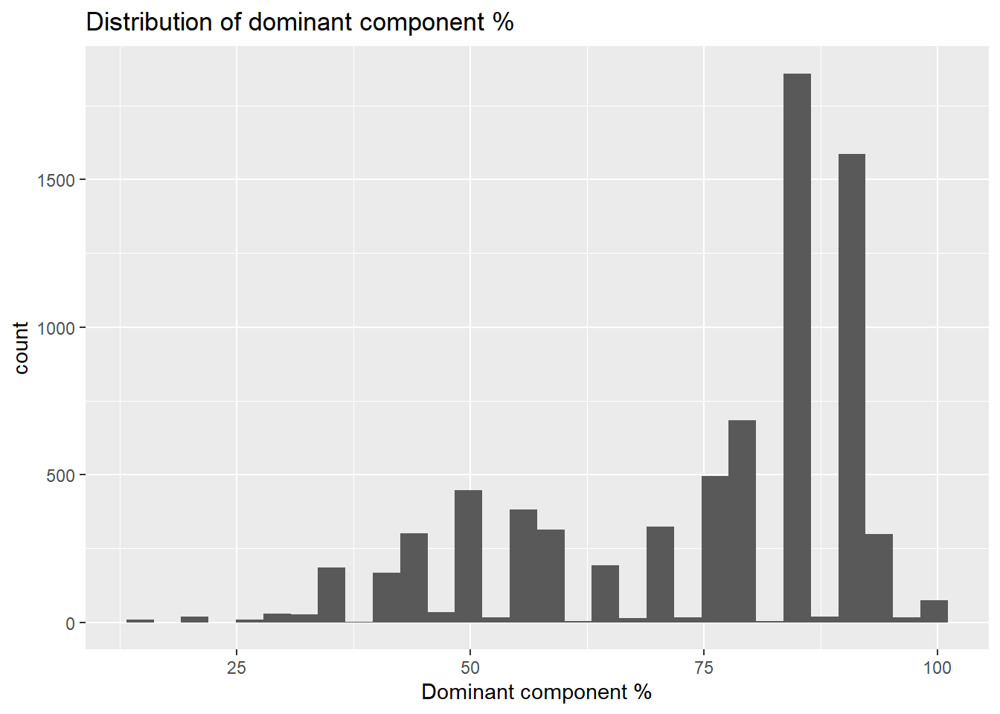

library(tidyverse)
library(glue)
# soil prop data 0-20cm aggregated by component
# drop the "contributing fraction" columns generated
# during our slab operation b/c we don't need them here
cmp <- read_csv("./data/wide_slab_aggregated_soil_props_20220912.csv") %>%
select(-contains("contributing_fraction"))
# components with corresponding mukeys
cmp_lookup <- read_csv("./data/component_list.csv") %>%
select(cokey, mukey, comppct_r, compname, compkind, starts_with("tax"))
# this was created back in 04-subset-...
# see my notes at end of this chap. about troubleshooting this
dom_cmp_key <- read_csv("./data/key_dominant_component_percent.csv")
# used to explore which MUKEYs were excluded
# based on data availability
mukey_info <- read_csv("./data/target_mapunit_table.csv")6 Map unit aggregation
Now that I have soil properties calculated for my target COKEYs, I need to aggregate those values to the MUKEY level, weighting my average soil properties by the normalized component percentages. This is necessary because we dropped all the components that were <15% of map unit area, and we want to calculate component percent-weighted averages for MUKEYS based on the proportions of the included components only.
Here am trying to figure out a nice LaTeX equation for the generic weighted means formula:
\[ \begin{equation} W = \dfrac{\sum_{i=1}^{n}w_{i}X_{i}}{\sum_{i=1}^{n}w_{i}}\end{equation} \]
Recall that we dropped 548 components because they didn’t have data / did not refer to specific series (dumps, water, gravel pits, etc.), see Section 4.4.4. So the cmp dataframe here has fewer rows than cmp_lookup.
6.1 Clustering Variables
Using the same variables they did in Devine et al., but added calcium carbonate (caco3_r_value)
clust_vars <- c(
"claytotal_r_value",
"om_r_value",
"cec7_r_value",
"dbthirdbar_r_value",
"ec_r_value",
"ph1to1h2o_r_value",
"caco3_r_value",
"lep_r_value",
"ksat_r_value",
"awc_r_value"
) 6.2 Drop incomplete cases
I think we want to keep only complete cases for our COKEYs (all of the variables we want to cluster on should have a value). Otherwise that would mess with our clustering. Here I’m checking on how many NAs there are for the different variables, then I drop the incomplete cases.
cmp %>%
select(cokey, all_of(clust_vars)) %>%
summarise(across(where(is.numeric), ~sum(is.na(.x)))) %>%
pivot_longer(cols = everything(), names_to = "variable",
values_to = "n_missing") %>%
arrange(desc(n_missing))And keep only the complete cases:
# keep only cokey and clustering vars
cmp_clust <- cmp %>%
select(cokey, all_of(clust_vars))
# filter to include only complete cases
# there are many ways to do this
# another way would be filter(complete.cases(.))
cmp_complete <- cmp_clust %>% drop_na()So we went from 10237 to 9387 COKEYs. (We dropped 850).
6.3 Create table for map unit data
Here, I take the (complete only) component data (0-20cm weighted averages for all our soil properties) and join it to my lookup table, which includes MUKEY. Then I nest COKEY data (multiple COKEYs can belong to one MUKEY). The result is a table with one row for each MUKEY.
I also pull out some info about the number, min %, and max % of components in a given MUKEY for context.
The first time I did this, I forgot to deal with NAs in the cmp dataframe, and we had 7525 MUKEYs to work with. After filtering to include only complete cases based on the cluster variables defined above, we now have 7062 MUKEYs to work with. For reference, Devine et al. had 4,595 for inclusion in their model (after an additional drop step based on sufficient data representation, see below Section 6.5) .
# nest by mukey
cmp_nest <- left_join(cmp_complete, cmp_lookup, by = c("cokey")) %>%
dplyr::select(cokey, mukey, everything()) %>%
dplyr::group_by(mukey) %>%
nest() %>%
dplyr::mutate(
n_comp = map_dbl(data, nrow),
# max_comp_pct = map_dbl(data,
# ~ max(.["comppct_r"])),
# min_comp_pct = map_dbl(data, ~ min(.["comppct_r"])),
cokeys = map(data, ~pull(.data = ., var = cokey))
) 6.4 Calculate map unit weighted means
I use the custom function below to calculate the component percent-weighted means for all soil properties and MUKEYs. Recall that I have the representative component percent, comppct_r in the list-column “data” within the cmp_nest dataframe. This came from the cmp_lookup table I loaded at the beginning.
Conveniently, we don’t need to do any extra work to normalize the COKEY weights. The default behavior of the weighted.mean function is to take the numerical vector of weights, w, and normalize it to sum to one. So we can simply supply comppct_r for the weights.
# decided that I don't need to add "na.rm" argument
# to the weighted.mean function here, because I've already removed all the NAs up above
calc_mu_wtd <- function(df, myvars){
wts <- df %>% pull(comppct_r)
df_mu_wtd <- df %>%
summarise(across(.cols = all_of(myvars),
.fns = ~weighted.mean(.x, w = wts)
))
return(df_mu_wtd)
}
df_mu_sum <- cmp_nest %>%
mutate(mu_sum_data = map(.x = data,
.f = calc_mu_wtd,
myvars = clust_vars))6.5 Determine data availability
Another thing to think about: what is our threshold for having “enough” data to appropriately represent a given MUKEY? For example, if we have a MUKEY represented by 1 component, but that component has a relatively small representative %? Like a comppct_r of <50%? <30%? Would we still consider that “representative” of that particular MUKEY?
What Devine et al. did was use the following logic:
- Data is available for at least 80% of the mapunit components OR
- Data availability at least equal to the dominant component percentage (recall that this info is stored in the
dom_cmp_keyobject for our analysis).
First, a little context about the number of components in our remaining MUKEYs:
# for context, tabulate mukeys by num comps
ncomp_counts <- cmp_nest %>%
group_by(n_comp) %>%
count(name = "n_mukeys")
head(ncomp_counts)Now, calculate the data availability for each MUKEY. Recall that since we dropped incomplete cases at the COKEY level above, we can get at data availability by summing the remaining comppct_r for each MUKEY.
The object dom_cmp_key I join in here was created in back in Chapter 3 . It specifies the comppct_r for the dominant component in a given map unit. It was important to pull this number early in our data aggregation process, before dropping any components due to missing data.
data_avail <- df_mu_sum %>%
mutate(avail_data_perc = map_dbl(data, ~ sum(.["comppct_r"]))) %>%
select(mukey, cokeys, avail_data_perc) %>%
left_join(., dom_cmp_key, by = "mukey")
head(data_avail)6.6 Exclude based on data availability
# populate a column specifying whether
# to include a given mukey.
# the order of the conditions is important
# must go from most specific to most general
# see https://dplyr.tidyverse.org/reference/case_when.html
exclude_key <- data_avail %>%
mutate(include = case_when(
avail_data_perc >= 80 ~ "yes", # cond. 2 (n=5874)
avail_data_perc >= dom_comppct ~ "yes", # cond. 1 (n=6912)
TRUE ~ "no" # doesn't meet either condition
)) %>%
select(-cokeys)
# add the info about include/excl to main dataset
df_mu_avail <- full_join(exclude_key, df_mu_sum, by = "mukey")
# keep only "include" mukeys
df_mu_incl <- df_mu_avail %>%
filter(include == "yes")After applying the criteria above for data availability, we went from 7062 to 6912 MUKEYs, a difference of 150.
6.7 Save Results
# the data we want, summarised at the MUKEY level,
# is in a list-column. That's why I use unnest here
# before saving the results.
mu_unnest <- df_mu_incl %>%
select(mukey,
mu_sum_data) %>%
unnest(mu_sum_data)
write_csv(mu_unnest, "./data/mu_weighted_soil_props.csv")Also want to save a key that relates my included cokeys with their mukey. This will be a slightly different list than the component_list.csv because we dropped COKEYs that had missing data in any of the clustering variables, and we dropped MUKEYs that didn’t have sufficient data.
cmp_list_incl <- df_mu_incl %>%
select(mukey, cokeys) %>%
unnest(cokeys) %>%
rename(cokey = cokeys)
write_csv(cmp_list_incl, "data/key_cokey_mukey_complete_cases_include.csv")6.8 More about MUKEYs we are excluding
Learn a little more about what we are excluding:
# how many MUKEYs are we excluding?
exclude_key %>%
group_by(include) %>%
count(name = "num_mukeys")# grab only mukeys we are excluding, join in more info
mukeys_drop <- exclude_key %>%
filter(include == "no")
mukeys_drop_details <- mukeys_drop %>%
left_join(., mukey_info, by = "mukey")
# most of these are not prime farmland
mukeys_drop_details %>%
group_by(farmlndcl) %>%
count()# types of mus
mukeys_drop_details %>%
group_by(mukind) %>%
count()# how many acres are represented?
drop_acres <- sum(mukeys_drop_details$muacres)
drop_acres[1] 512769# of the 150 MUKEYs, how many are urban?
urban <- mukeys_drop_details %>%
filter(str_detect(muname, "Urban"))
nrow(urban)[1] 54# and what percentage of the dropped acres are urban?
round((sum(urban$muacres) / drop_acres) * 100, digits = 1)[1] 29.1# dropping urban stuff (don't care about it)
# want to look more at the non-urban MUs
munames <- mukeys_drop_details %>%
filter(!str_detect(muname, "Urban")) %>%
pull(muname)
# splitting at the comma so I can drop slope info
muname_stripped <- as.data.frame(str_split_fixed(munames, ",", 2)) %>% select(V1)
# once we strip out the slope info
# only 35 unique, non-urban munames
distinct(muname_stripped) %>%
rename(abbrev_muname = V1) %>%
arrange(abbrev_muname)6.9 (old) Explore dominant component percentages
Keeping this here as an illustration/explanation, but the dominant component percentages we actually want to use come from Chapter 3 . This is some troubleshooting and exploration I did on the road to figuring that out.
# this adds MUKEY to our df
cmp_mukey_detail <- left_join(cmp, cmp_lookup, by = c("cokey"))
old_dom_cmp_key <- cmp_mukey_detail %>%
select(cokey, mukey, comppct_r) %>%
group_by(mukey) %>%
summarise(dom_comppct = max(comppct_r))
head(old_dom_cmp_key)# again, these % look weird, and have some
# very low %, because of the issues described below
old_dom_cmp_key %>%
ggplot() +
geom_histogram(aes(x = dom_comppct)) +
ggtitle("Distribution of dominant component %") +
xlab("Dominant component %")`stat_bin()` using `bins = 30`. Pick better value with `binwidth`.
Thoughts after troubleshooting this. The dominant component percentages shouldn’t be calculated here, they should be done earlier, in Chapter 3, before we promote to SPC object. Below is an example with two MUKEYs to illustrate.
Both of these MUKEYs have large areas in components that don’t have data in the database (“Pits” and “Urban Land”). This makes sense. These are the types of components that are dropped when we promote our chorizon data to an aqp object, see Section 4.4.4 . There is data available for lower % components “Dassel” and “Udipsamment” here, but those aren’t the true dominant components, they are simply the only components that made it through the filtering that happened when I created my aqp object.
So if I want to use the dominant component percentage as a criterion in including/excluding data, I need to grab it earlier.
More broadly, if these areas are primarily urban land or pits, they aren’t really the type of thing we’d want to include in this primarily agricultural analysis anyway. So it’s good that we have a way to filter them out.
# as an example
old_dom_cmp_key %>%
filter(dom_comppct < 25) %>%
left_join(., cmp_lookup, by = "mukey") %>%
filter(mukey %in% c(394766, 428184))